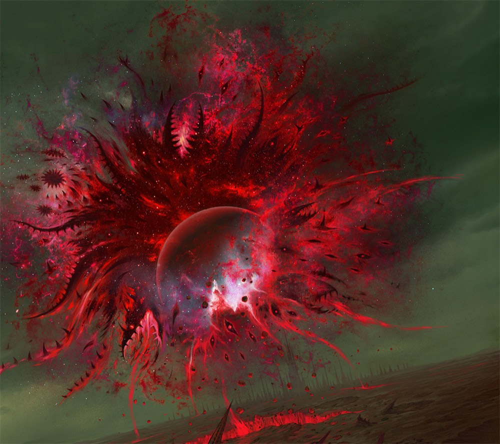
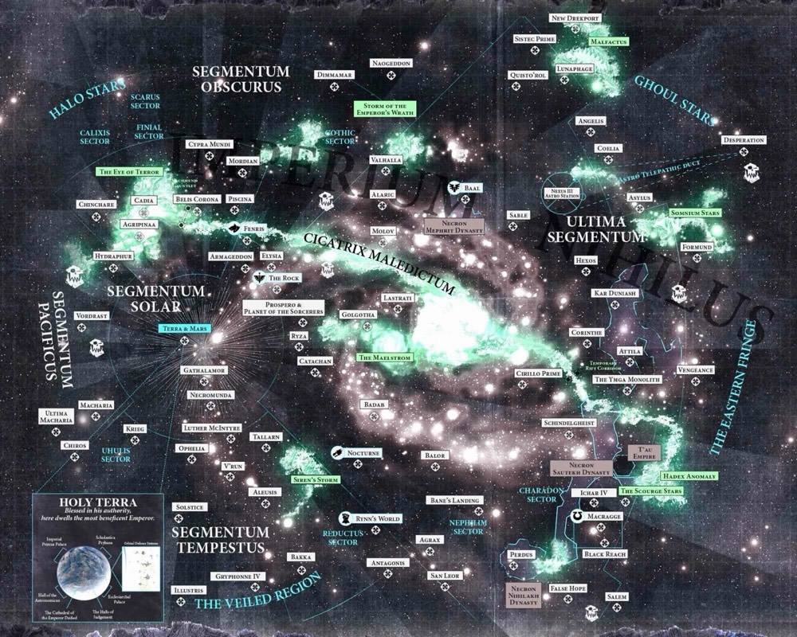

Great Rift
| Great Rift Cicatrix Maledictum | |
|---|---|
| Warp rift and the period of its opening | |
 The Rift as drawn by an Imperial astropath from a world on its edge | |
| Date | 999.M41 and after; the Noctis Aeterna from the opening to the return of the Astronomican |
| Extent | From the Eye of Terror in the galactic west to the Hadex Anomaly on the Eastern Fringe |
| Other names | Cicatrix Maledictum (High Gothic); the Crimson Path (Chaos); the Mouth of Ruin; the Warpscar; Dathedian (Aeldari); Gork's Grin (Orks) |
| Cause | Disputed. The fall of Cadia and its pylons is most often cited |
| Result | The Imperium divided; the Astronomican hidden from half the galaxy; a general rise in psychic phenomena; a new chronology |
| Powers on either side | |
| Imperium Sanctus (Terran side) | Imperium Nihilus (the Dark Imperium) |
The Great Rift, called the Cicatrix Maledictum in High Gothic, is a tear in the fabric of reality and a galaxy-wide chain of warp storms that opened across the middle of the Imperium in 999.M41. It runs from the Eye of Terror in the galactic west to the Hadex Anomaly on the eastern fringe, and it has divided the territory of the Imperium into two parts. The worlds on the side of Terra, the Imperium Sanctus, can still see the light of the Astronomican. Those beyond it, the Imperium Nihilus, were plunged into a darkness that the Administratum has named the Noctis Aeterna, the Eternal Night, and have been left to fight alone.[1][2]
The Rift is the greatest warp event in recorded history, and it has transformed the Imperium. It claimed countless worlds, fleets and armies in the first years. It is the reason for the Indomitus Crusade, for the new Imperial calendar, and for a surge in psychic ability across the galaxy that scholars have called the Psychic Awakening and that common speech calls the Age of Witches. To the Traitors of the Eye it is the Crimson Path, which Abaddon the Despoiler strove for thirteen crusades to open.[1]
Names
[edit]Every culture has its own name for the Rift, and most reflect fear. The Imperium uses the High Gothic Cicatrix Maledictum, "the accursed scar", or the Great Rift. Mariners speak of the Mouth of Ruin or the Warpscar. The Aeldari call it Dathedian, a name from their own tongue that no Imperial scholar has been able to translate with certainty. The Orks see it as the grin of their god Gork. The Orks have only two gods, brutal but cunning Gork and cunning but brutal Mork, and the greenskins who saw the Rift open took it to be Gork's wide mouth, about to swallow the stars. That the Rift pours Chaos worshippers and daemons into the galaxy did not disturb them, since the cleverer among them reasoned that Gork was vomiting out unnatural filth so that the Orks could fight it. Tribes whose worlds were swallowed concluded that Gork had found them soft and sent them to the warpath.[1]
Origins
[edit]The state of the Warp
[edit]Before the Rift opened, the Warp had been growing restless for decades. In the last years of the 41st millennium, travel and communication through it suffered increasing disturbance, and the astropathic choirs recorded visions and storms that they could not explain. The events of the Thirteenth Black Crusade in 999.M41 made matters worse. In the end, Imperial scholars hold, the material universe could bear no more, and a vast rift tore across the stars.[1]
Theories of cause
[edit]No scholar knows why the Rift opened. The principal theories, as set out by the Inquisition and the Mechanicus, include the following.[1]
- The fall of Cadia. The destruction of the fortress world and of the Necron pylons that had held the Eye of Terror in check, in the final battle of the Thirteenth Black Crusade, is the explanation most often given. The Eye expanded when the pylons fell. See Fall of Cadia.
- The sorcery of Magnus. The Daemon Primarch Magnus the Red and his Thousand Sons invaded the Fenris system in the same period to take revenge for the burning of Prospero, and some hold that the sorcery of the invasion weakened the Warp.
- Catastrophe in the Webway. The Aeldari believe that a breach in the Webway was involved, and in particular the sundering of the craftworld Biel-Tan and the partial awakening of Ynnead, their god of the dead.
- The breaking of the Amethal daemon cage, the bloodshed between the Imperium and the T'au in the Damocles Gulf, and a dozen similar events of the last years of the millennium.
- The resurrection of Roboute Guilliman. The return of a primarch, and the psychic disturbance that went with it, is held by some to have been a contributing cause.
The Inquisition's official position is that no single event was the cause, and that all of these contributed to a collapse that had been in preparation for a long time. The Ordo Malleus adds that the Ruinous Powers, who have been working toward such a moment for ten thousand years, would not have been idle.[1]
The opening
[edit]The Noctis Aeterna
[edit]When the Rift tore open it unleashed a wave of empyric energy and supernatural darkness that dimmed the psychic light of the Astronomican. The Imperium named it the Noctis Aeterna. The effect alone claimed countless worlds, fleets and armies. Navigators lost their way. Ships that had entered the Warp did not come out. Astropathic communication between the two halves of the Imperium ended, and worlds that had been in contact with Terra for ten thousand years heard no word for years. On many of the worlds beyond the Rift, the Astronomican was not simply obscured, it was replaced by what survivors called a psychic maelstrom of nightmares, and the gates of Hell were said to have opened.[1][2]
Storms of unprecedented fury now circle the Rift, and others move across the galaxy as if guided by a will, obeying no known law of solar current. They cut worlds off from the Astronomican and have enslaved, terrorised or destroyed countless populations. The Noctis Aeterna has since receded. Its beacon is visible again in the Imperium Sanctus, but the storms, the Rift itself and the Imperium Nihilus remain.[1]

The distortion of time
[edit]The fraying of the barrier between worlds and the Warp has also disturbed time. The temporal fluctuations that were once confined to the great storms such as the Eye of Terror now spread across the galaxy. Some worlds on the edge of the Rift felt standard centuries pass in an instant, and others were almost frozen. Others experience constant shifts. The result was a revision of the Imperial calendar ordered by Roboute Guilliman. It was made to correct the growing inaccuracy of the previous chronology, and it takes the opening of the Rift as the point from which all later dates are reckoned. The Era Indomitus is named for the response.[1]
The divided Imperium
[edit]The Imperium Sanctus
[edit]The Imperium Sanctus, the Holy Imperium, includes Terra, Mars and most of the worlds of the Segmentum Solar. The Astronomican can be seen from it. After the Noctis Aeterna receded, the light returned across the Imperium Sanctus, and travel by Warp became easier, though never safe. The Sanctus has been the base of the Imperium's recovery. It is governed by the High Lords of Terra under the authority of the returned Lord Commander, Roboute Guilliman.[1]
The Imperium Nihilus
[edit]The Imperium Nihilus, the Dark Imperium, lies beyond the Rift. The light of the Emperor cannot be seen there, and the Navigators of the Navis Nobilite cannot navigate by it. Many planets near the Rift disappeared. Others were corrupted so that they are now classed as Daemon Worlds. Among the many Chapters whose homeworlds lay in the Nihilus was the Blood Angels, whose world of Baal was already under attack by Hive Fleet Leviathan. Cut off from Terra, the Blood Angels and their successors stood against the fleet in the Devastation of Baal. They were saved in the end only by aid from the servants of the Emperor and, unexpectedly, from his enemies. The Lord Commander has appointed the Blood Angels' Chapter Master Dante as Regent of the Imperium Nihilus, charged with holding together a realm that cannot be reached by ordinary means.[1]
Responses
[edit]The Indomitus Crusade
[edit]Roboute Guilliman, newly resurrected, launched the Indomitus Crusade to restore contact and fight the forces emerging from the Rift. He assembled an armada, with elements of the Adeptus Custodes, a small contingent of the Sisters of Silence and a vast host of Primaris Space Marines drawn from the newly founded Chapters of the Second Founding. Strike forces from more than a dozen older Chapters, led by the Imperial Fists, joined it. The fleets travelled to besieged worlds, broke sieges and cleared invaders. News of the crusade spread by astropath wherever messages could still be received, and the return of a hero from the age of myth became known across the Imperium.[1]
The task was too great for any single crusade. The first phase ended with the repulse of the forces of Nurgle from Guilliman's own realm of Ultramar in the Plague Wars. Since the Rift opened, no world of the Imperium has been without war, and many thousands still call for aid.[1]
The Psychic Awakening
[edit]The Rift has also enhanced the number and power of psykers. Worlds that had no psykers for generations began to produce them in large numbers, and the strength of established psykers increased. The Inquisition and the Adeptus Astra Telepathica have found their resources overwhelmed. The same effect has made the daemonic more dangerous, since the Warp spills through any weakness into the material universe. Some speak of an Age of Witches. The Ynnari, a cult among the Aeldari that serves the god Ynnead, has appeared in the same period, and the Imperium's scholars note that the Rift is a place of rebirth for several of the galaxy's peoples as well as of destruction.[1]
Effects on other powers
[edit]Chaos
[edit]For the Traitors the Rift is the Crimson Path, the goal of the Black Crusades. The expanded Eye of Terror has become a larger realm of Chaos, and the wreck of Cadia has been resettled by the Black Legion as a fortress. The Death Guard, the Thousand Sons and other Traitor Legions have launched campaigns across the Segmentum Obscurus and beyond, and daemonic incursions have multiplied on worlds in the Nihilus.[1]
The xenos
[edit]The Rift has also changed the war with the xenos. The Orks have spread through the galaxy in greater numbers, and their stronger tribes have claimed Gork's Grin as a sign. Tyranid hive fleets have taken advantage of the Imperium's weakness on its eastern fringe. The Necrons have woken in larger numbers, and the T'au Empire has expanded where Imperial garrisons have been stripped for the defence of the Cadian Gate. [1]

Current state
[edit]The Rift has not stopped growing. It roils and spreads, devouring entire species with its power, and the Imperium has not found any way of closing it. Imperial scholars regard it as the defining event of the age, as the Heresy was of the 31st millennium. The Era Indomitus, the age that it opened, continues.[1]